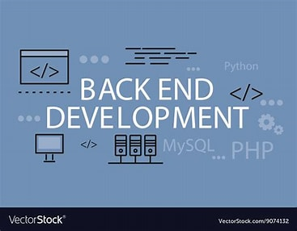

Build and maintain the server-side of web applications
Backend development focuses on server-side logic, databases, and integration of APIs. As a backend developer, you'll ensure that the data and services requested by the frontend system or software are delivered through programmatic means.
Write efficient server-side applications and APIs.
Develop robust backend systems with object-oriented programming.
Build scalable network applications using JavaScript.
Manage and query relational databases effectively.
Work with NoSQL databases for flexible data storage.
Create and manage APIs for client-server communication.
Offers competitive salaries for backend developers, with packages up to ₹29.5 LPA.
Provides opportunities in server-side application development with salaries up to ₹20.5 LPA.
Engages in diverse projects requiring backend expertise, offering salaries up to ₹16.1 LPA.
Seeks backend developers for various client projects with salaries up to ₹12.7 LPA.
Offers positions in backend application development with salaries up to ₹8.4 LPA.
Provides roles in backend development across industries, with competitive compensation packages.
Note: Salaries vary based on skills, experience, and location.
To become a proficient Backend Developer, consider learning from these trusted online platforms. They offer comprehensive courses, projects, and hands-on experience to build your skills from scratch to advanced levels.